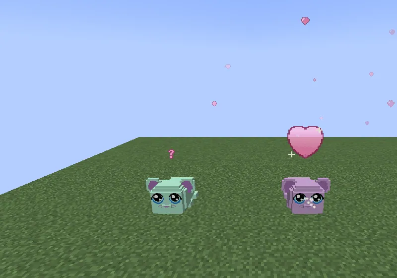

Every guh has eight secret favourites. Guess them (warm or cold?) and your guh gets happy.
Elke guh heeft acht geheime favorietjes. Raad ze (warm of koud?) en je guh wordt blij.
Eight secrets per guhAcht geheimpjes per guh
Every guh has eight secret favourites, the same for as long as it lives. You find them by trying things while you're close by. Is it the right one? A big heart explosion with golden sparkles, a happy dance, 50 hearts, a line in its dagboekje and in the chat (Njeg!! Guh smult en smakt en straalt: Cupcake is zijn LIEVELINGSHAPJE! VAHOEG!), and it is blij for five minutes. Every time after that it gets a few hearts and a little heart burst again.
Elke guh heeft acht geheime favorietjes, die hij zijn hele leven houdt. Je vindt ze door dingen te proberen terwijl je in de buurt bent. Is het de goeie? Een grote hartjesexplosie met gouden glinsters, een blij dansje, 50 hartjes, een regel in zijn dagboekje en in de chat (Njeg!! Guh smult en smakt en straalt: Cupcake is zijn LIEVELINGSHAPJE! VAHOEG!), en hij is vijf minuten blij. Elke keer daarna krijgt hij weer wat hartjes en een klein hartjeswolkje.
| FavouriteFavorietje | What it can beWat het kan zijn |
|---|---|
| Lievelingshapje | a snack (feed it all kinds)een snackje (voer hem van alles) |
| Lievelingsplek | a biome (take it travelling)een bioom (neem hem mee op reis) |
| Lievelingsknuffel | a plushie from the grijpmachine (put plushies near it)een knuffel uit de grijpmachine (zet knuffels bij hem neer) |
| Lievelingsliedje | a koortje song (xylofoon) or a disco songeen koortjesliedje (xylofoon) of een discoliedje |
| Lievelingsspeeltje | one of the four toyseen van de vier soorten speelgoed |
| Lievelingsemote | one of its emoteseen van zijn emotes |
| Lievelingskleur | a clothing colour (12 colours: roze, rood, oranje, geel, groen, mint, blauw, paars, wit, zwart, bruin, goud)een kleur kleertje (12 kleuren: roze, rood, oranje, geel, groen, mint, blauw, paars, wit, zwart, bruin, goud) |
| Beste guh-vriendje | one of your other guhseen van je andere guhs |

Warm or cold?Warm of koud?
Not the favourite yet? Then you get a hint above your hotbar. Warm (close: the same kind of snack, a biome of the same family, a neighbouring colour, a plush of the same group...): Guh kijkt nieuwsgierig... with a pink bobbing ?. Cold: Guh snuffelt... njeg? with little sniff puffs at its snoet. A hint is never a discovery, and when nobody is watching the guh is just happy.
Nog niet het favorietje? Dan krijg je een hint boven je hotbar. Warm (dichtbij: hetzelfde soort snackje, een bioom uit dezelfde familie, een kleur ernaast, een knuffel uit hetzelfde groepje...): Guh kijkt nieuwsgierig... met een roze dobberend ?. Koud: Guh snuffelt... njeg? met snuffelwolkjes bij zijn snoet. Een hint is nooit een ontdekking, en als niemand kijkt is de guh gewoon blij.
Blij!
- A blij guh gets 1.5× hearts and does its chores 1.5× as fast.Een blije guh krijgt 1,5× hartjes en doet zijn klusjes 1,5× zo snel.
- Standing in its favourite biome, wearing its favourite colour or next to its best friend keeps it blij.In zijn lievelingsbioom staan, zijn lievelingskleur dragen of naast zijn beste vriendje zijn houdt hem blij.
- In a minigame a blij guh cheers louder and hums its favourite song; at a record it sings eight notes of it out loud.Bij een minigame juicht een blije guh harder en neuriet hij zijn lievelingsliedje; bij een record zingt hij er acht noten van hardop.
At a glanceIn het kort
- AdvancementsVooruitgangen
- Een geheimpje! · Lievelingshapje! · Lievelingsplekje! · Lievelingsknuffel! · Lievelingsliedje! · Lievelingsspeeltje! · Lievelingskunstje! · Lievelingskleur! · Allerbeste guh-vriendje! · Ik ken al je geheimpjes ★